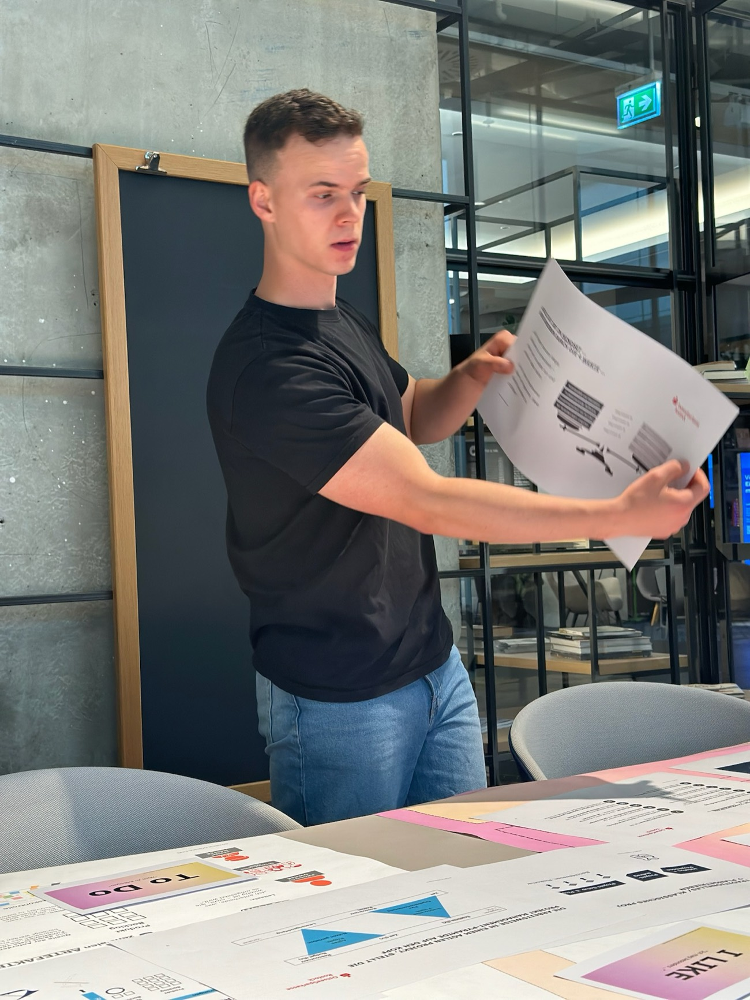
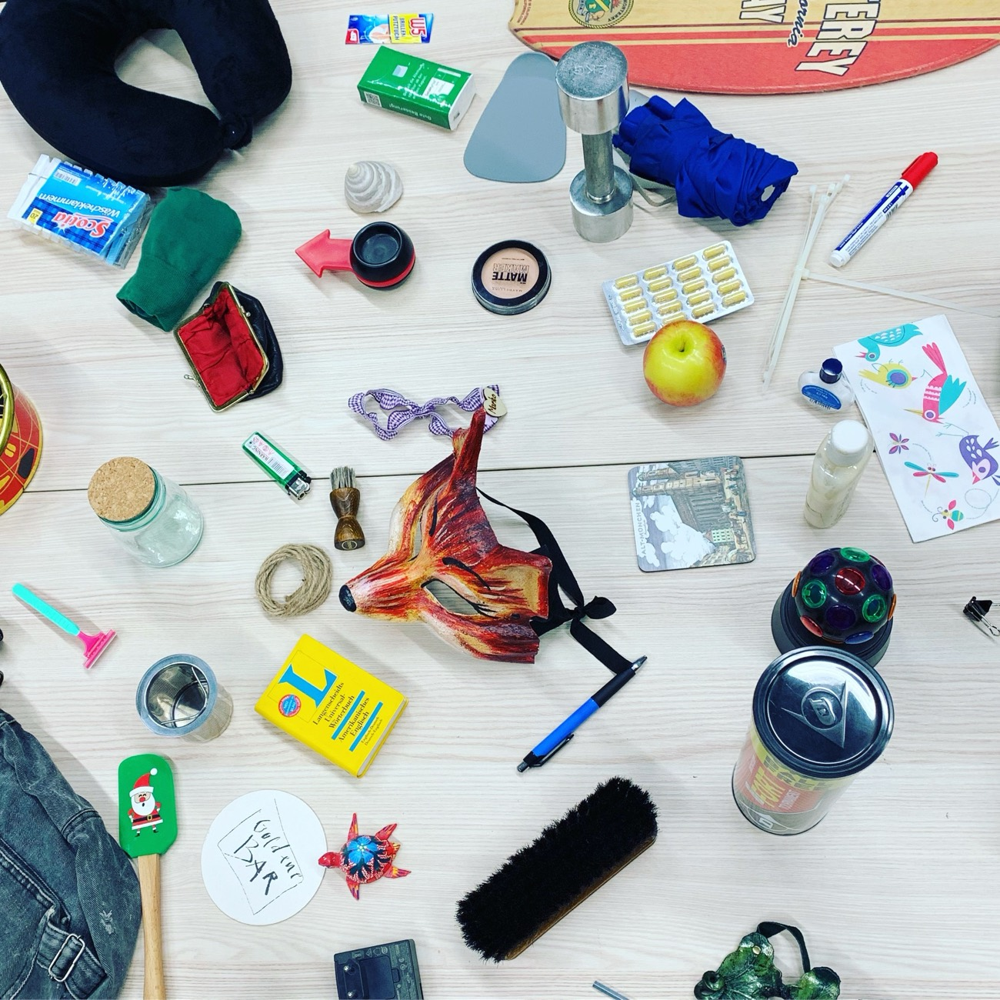

Von rückläufiger Belegung zu klarem Profil: Wie ein sozialer Träger seine Kita mit neuer Positionierung, teiloffenem Betreuungsmodell und klarer Steuerung wieder auf ein tragfähiges Fundament gestellt hat.
Ausgangslage
Ein sozialer Träger, der eine Kita betreibt, kam mit einem wachsenden Problem zu uns. Die Belegung ging zurück, das Angebot wirkte gegenüber dem Umfeld unscharf, und ein starres Gruppensystem ließ wenig Spielraum. Mittelfristig drohte die Schließung. Die Ursachen: eine unklare Positionierung, geringe Sichtbarkeit und ein Betreuungsmodell, das nicht mehr zu den Erwartungen heutiger Eltern passte.
Vorgehen
Wir sind in drei Schritten vorgegangen:
- Umfeld und Zielgruppe analysiert, inklusive Gesprächen mit Eltern, um zu verstehen, wonach Familien wirklich entscheiden. Das zeigte eine klare Profillücke, aber auch Stärken, auf denen sich aufbauen ließ.
- In Workshops mit Geschäftsführung, Leitung und Team ein gemeinsames Zielbild entwickelt und in ein teiloffenes, zielgruppenorientiertes Betreuungsmodell übersetzt.
- Klare Regeln, Rollen und einen monatsgenauen Übergangsfahrplan bis zur abgeschlossenen Eingewöhnung festgelegt.

Aus einer Kita unter Druck ist eine Einrichtung geworden, die ihr Profil kennt.
Ergebnis
Heute arbeitet die Einrichtung auf ein offeneres Konzept hin, das pädagogische Qualität, Steuerbarkeit und Außenwirkung verbindet. Kennzahlen wie Belegung und Zufriedenheit werden gezielt erhoben, eine Taskforce steuert die Umsetzung in Stufen. Aus einer Kita unter Druck ist eine Einrichtung geworden, die ihr Profil kennt und auf einem tragfähigen Fundament weiterwachsen kann.
